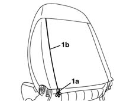
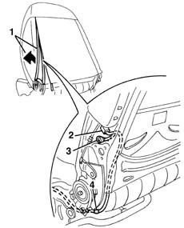
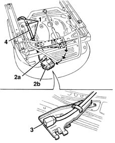
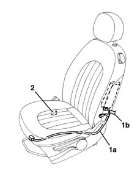

5580C86 side bag wiring harness (one) lh or rh - r r or replace
- Path
- Procedures > 55 ELECTRICAL EQUIPMENT > 5580 SPECIAL ACCESSORIES > 5580C air bag system > 5580C86 side bag wiring harness (one) lh or rh - r r or replace
- Kind
- repair procedure (removal / refitting; the operation number is the code)
- Applies to
- all engines; all production periods
- Interactive page
- https://sloeber94.github.io/elrnDB-lYpsln/en/#/2429459
Applies to: all engines; all production periods
Applies to: all engines; all production periods
 Removing
Removing
 Refitting
Refitting7045A13 front seat with side bag r r
7045A56 LEVER controlling DRIVER'S seat height adjustment device - R.R .
7045A43 seat exterior guard - r r
1. Open the hinges (1a) along the entire section (1b).

Applies to: all engines; all production periods
1. Move the cover with padding slightly.
2. Disconnect the electrical connection from the Air Bag module.
3. Disconnect the electrical earth connection.
4. Release the wiring retainer.

Applies to: all engines; all production periods
1. Working underneath the seat, release the wiring retainers.
2. Release the retainer (2a) and rotate the connector mounting bracket (2b) so that it is in an accessible position.
3. Release the connector from the bracket.
4. Keep the cable loom.

Applies to: all engines; all production periods
Refitting
RemovingCheck that the wiring is intact and shows no signs of damage.
If a new wiring is being fitted, attach the labels as described below.
1. Detach the removable part (1b) of the adhesive label from the new wiring (1a). Place a copy of the label (1b) in a specific file containing the vehicle details (model, registration data, chassis number) and the serial number of the old squab cover. This file should be kept for future checks.
2. Apply the original label (1b) to the inner part at the bottom of the seat, where there are already the equivalent labels for seat, side Air Bag module and backrest cover.

Applies to: all engines; all production periods
Position the wiring on the frame and secure it using the retaining bands.
Turn the connector carrier bracket in its seat and engage the retainer.
Connect the electrical earth connection to the frame.
Connect the electrical connection to the Air Bag module.
Position the trim and close the hinges.
Move the seat through all its various settings to ensure that movements take place without binding or noise.
7045A43 seat exterior guard - r r
7045A56 LEVER controlling DRIVER'S seat height adjustment device - R.R .
7045A13 front seat with side bag r r
Check the operation of the system using the Examiner.